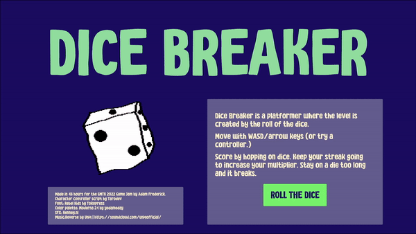
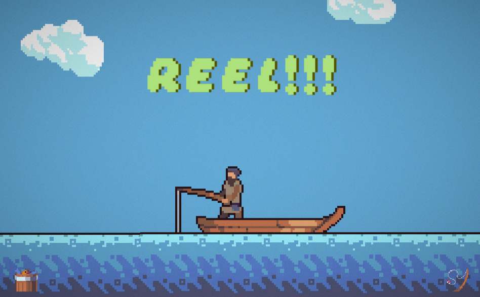

Dice Breaker
Project goal:
In Summer 2021, the Youtube channel Game Maker's Toolkit ran a game jam with the theme of "Roll of the Dice." The jam was limited to 48 hours, and I participated as a solo developer.
Process:
I tried a couple design prototypes, including an attempt at a 2D first person view, before settling on a design that could be accomplished without creating a bunch of custom assets. I selected some sprites from three different asset packs, built a small scene with Unity's tilemap tools, then animated the fish and coded some simple pathing patterns. I used a sprite mask for the preview circle mechanic, and built a simple menu to keep track of the fish the player has caught. After adding some royalty-free music and sound effects, I finished it with a post-processing pass to make it look a little more interesting.
Retrospective
At the time, I was trying to become more adept at leveraging the State pattern, so all of the game management is done with one big state machine. I made a couple mistakes with how I was handling individual states, which made the debugging process painful at times. Using post-processing improved the look, but doesn't run particularly well in a WebGL build. Overall, it was a great learning experience, and I think resulted in a pleasant user experience.